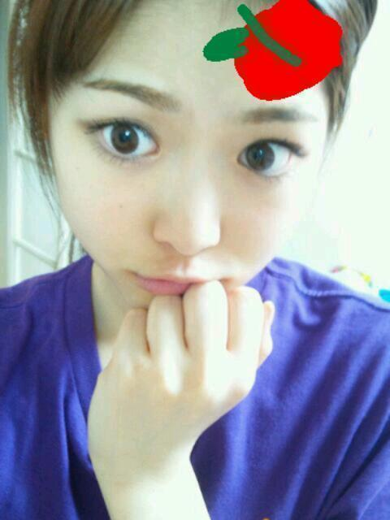

2012/0928Friココアおいちーっ(o・・o)
こんばんごっっ(o・・o)
さゆりんごっっ(o・・o)
はろー＼(^^)／
大阪個別ありがとうございました(^^)！
関西弁癒し！
世界に関西弁を広めるのが
うちの夢です////
なんでやねんっ
あかんあかんっ
なんぼですかー？
にゃはっ(o・ω・o)
名古屋もよろしくお願いします(>_<)
いっぱいお話しよなー///
今日はスカパーさんで
左胸の勇気をパフォーマンスしましたー＼(^^)／
あんまり
やる機会ないから
めっちゃ張り切ってやったら
しゃがむとこで
体がバウンドするぐらい
勢いよくしゃがんでもうて
膝が あおたんなったんよー
頑張ったしるしと思っとくんよー＼(^^)／
けど、下手な子ほど
よく怪我するって言うやんねー
松村の膝なー
あおたんと床に擦った傷が
多々あるんよー／(^^)＼
別にまっちゅんが
ダンス下手とか言いたい訳ちゃうよ(￣▽￣)
え？何？下手やって？
うっちゃいわー(ノ_・,)
ただ
怪我の量と技術は
なんか関係あるんかなーとか思ってー
まぁ、いっか(*^^*)あは
大阪の写真！
いつもは下ろしたらあかんから
髪型自由の個別は下ろすことが多いなー(^^)
ほんで、今日も松村の今！
また撮れたてほやほやのさゆりんごなり！
しかし、残念ながら
髪をまとめた
前髪なしのオフモードさゆりんなり！
家ではいつもこれ！笑

実はさゆりんのでこには秘密がある！
めっちゃしょうもないけど
今は内緒〜笑
別にすぐに言ってもいいレベルやけどな(￣▽￣)ｂ笑
ほなら、またねー＼(^^)／
さいなら！
2012/09/28 05:30
コメント(537)
さゆりんご、握手会ありがとうございました。めちゃくちゃ楽しかったよ。
今週もよろしくお願いします。
髪型も服装も可愛かった。
デコの秘密？気になる
今週もよろしくお願いします。
髪型も服装も可愛かった。
デコの秘密？気になる
まっちゅんおはよー
大阪お疲れ様～♪
普段髪下ろしたらあかんねんなぁ
リクエストしといて良かった
前髪無しもみたいww
でこ気になる気になる(>_<)
明日教えてな！
じゃあまた明日多分行くわ←
ほなねﾉｼ
大阪お疲れ様～♪
普段髪下ろしたらあかんねんなぁ
リクエストしといて良かった
前髪無しもみたいww
でこ気になる気になる(>_<)
明日教えてな！
じゃあまた明日多分行くわ←
ほなねﾉｼ
名古屋と大阪ほんま楽しかったよー！
さゆりんほんまに可愛いし！
もっともっと大好きになったわ(*´ω`*)
さゆりんのダンス私はすっきゃでーい！！
おでこみせてー(*´ω`*)
大阪個別で初めて行ったけど、１枚だけでもめっちゃ楽しかった(*^^*)
また全握で行きます(笑)
また全握で行きます(笑)
さゆりんのおでこの秘密とは何や？
知りたい
膝のあざとあおたん直してあげたいよ
髪上げたのも可愛い
会いたいぜ
知りたい
膝のあざとあおたん直してあげたいよ
髪上げたのも可愛い
会いたいぜ
さゆりんご
アップ待ってたでー！
まっつん覚えてくれてて嬉しかったわ☆
モダン焼きは語り合ったな♪
大阪は全国握手会ないんかな？
ミニライブ見たいわ！
はなね
アップ待ってたでー！
まっつん覚えてくれてて嬉しかったわ☆
モダン焼きは語り合ったな♪
大阪は全国握手会ないんかな？
ミニライブ見たいわ！
はなね
お疲れ様
スカパー入ってるけど間に合わんくて見れんかった(>_<)
大阪弁もやけど、大阪で広めようと言ったポーズもよろしく(笑)
誰がやってるとか関係ない←
乃木坂ではさゆりんが広めたらえぇんやｗｗ
じゃ、明日もよろしくね
スカパー入ってるけど間に合わんくて見れんかった(>_<)
大阪弁もやけど、大阪で広めようと言ったポーズもよろしく(笑)
誰がやってるとか関係ない←
乃木坂ではさゆりんが広めたらえぇんやｗｗ
じゃ、明日もよろしくね
おおー、何かいつもと雰囲気ちゃうね♪
その髪型もええやん(^^)d
その髪型もええやん(^^)d
さゆりん、おはようりんご〜￣O￣)ﾉｵﾊｰ
オフモードさゆりん可愛すぎる〜！！
スカパー見たよ！！ヾ(≧∇≦*)/
また、後でちゃんとコメント書くね♪(о￣∇￣)/
じゃあ、さゆりん今日もお仕事頑張ってね！！
さゆりんのこと、ずっと応援してるよ〜。+゜ヾ(o゜∀゜o)ノ。+゜
オフモードさゆりん可愛すぎる〜！！
スカパー見たよ！！ヾ(≧∇≦*)/
また、後でちゃんとコメント書くね♪(о￣∇￣)/
じゃあ、さゆりん今日もお仕事頑張ってね！！
さゆりんのこと、ずっと応援してるよ〜。+゜ヾ(o゜∀゜o)ノ。+゜
大阪個別お疲れ様ー＼(^o^)／
行きたかったなー
行った人に聞いたんやけど
さゆりんめっちゃ人気やったらしいね？
さすがやね＼(^o^)／
膝のあおたん大丈夫？
あんま怪我しないでねw
大阪個別のときのさゆりんも
撮れたてほやほやのさゆりんも可愛いなぁ(*^^*)
行きたかったなー
行った人に聞いたんやけど
さゆりんめっちゃ人気やったらしいね？
さすがやね＼(^o^)／
膝のあおたん大丈夫？
あんま怪我しないでねw
大阪個別のときのさゆりんも
撮れたてほやほやのさゆりんも可愛いなぁ(*^^*)
更新待ってましたー(≧∀≦)
握手会めっちゃ楽しかったでヾ(≧∇≦)
これから行くからなー！
さゆりんの髪下ろしてるのめっちゃ好きやねん(o^^o)
今度の個別もお願いします(^.^)
今回見られへんかったから(T.T)
でこになにあるんやー(笑)(笑)
言っちゃって(笑)
じゃーまたコメントする(☆｡☆)
けんたろう(けんちゃん)
握手会めっちゃ楽しかったでヾ(≧∇≦)
これから行くからなー！
さゆりんの髪下ろしてるのめっちゃ好きやねん(o^^o)
今度の個別もお願いします(^.^)
今回見られへんかったから(T.T)
でこになにあるんやー(笑)(笑)
言っちゃって(笑)
じゃーまたコメントする(☆｡☆)
けんたろう(けんちゃん)
韓国のファン、ゆおんと申します！
えーと
いつもブログはみていたんですが
髪型下ろしたのがかわいすぎて
初コメです！
これからもコメントしてもいいですか？
きょうもいちにちがんばってください！＾＾
ｂｙゆおん
えーと
いつもブログはみていたんですが
髪型下ろしたのがかわいすぎて
初コメです！
これからもコメントしてもいいですか？
きょうもいちにちがんばってください！＾＾
ｂｙゆおん
デコの秘密しりたいわ～(≧∀≦)
さゆりん、おはようございます。
そしてブログ更新ありがとう。
最近はいかがお過ごしでしょうか？
すっかり秋めいてきましたね。
僕は昨日からお腹をこわしております。季節の変わり目は何かと調子を崩しやすいとおもいますので、気をつけて下さい。
話はかわりますが、さゆりんの好きな秋の味覚はなんですか？
僕は栗が良いかな。
そんじゃーまたね。
そしてブログ更新ありがとう。
最近はいかがお過ごしでしょうか？
すっかり秋めいてきましたね。
僕は昨日からお腹をこわしております。季節の変わり目は何かと調子を崩しやすいとおもいますので、気をつけて下さい。
話はかわりますが、さゆりんの好きな秋の味覚はなんですか？
僕は栗が良いかな。
そんじゃーまたね。
まっちゅんやっほー
さっき書くの忘れてたww
心配せんでも、まっちゅんのダンス下手くそやから(￣▽￣)b
大丈夫俺が保証する(笑)
まあ下手くそでも頑張ってるまっちゅんが可愛くてしょうがないねんけどな(//∇//)
そんなけ
ほなねﾉｼ
さっき書くの忘れてたww
心配せんでも、まっちゅんのダンス下手くそやから(￣▽￣)b
大丈夫俺が保証する(笑)
まあ下手くそでも頑張ってるまっちゅんが可愛くてしょうがないねんけどな(//∇//)
そんなけ
ほなねﾉｼ
ぐりです
名古屋個別楽しみになってきた
さゆりんと何話そう
膝大丈夫&sF9D6;
無理しすぎてまた怪我しないように
さゆりんの髪下ろしているのを生で見たい
おでこの秘密がきになる&sF9D7;
名古屋個別楽しみになってきた
さゆりんと何話そう
膝大丈夫&sF9D6;
無理しすぎてまた怪我しないように
さゆりんの髪下ろしているのを生で見たい
おでこの秘密がきになる&sF9D7;
可愛すぎる‼
罪ですな
罪ですな
さゆりん可愛いすぎー！！
しかもおもしろい＼(^o^)／笑
おはよ(^-^)
大阪個別楽しかったー
髪おろしたさゆりん天使やったわぁ
関西弁広めて(笑)
名古屋でも枚数少ないけど行くけんな♪
もう明日か！
１週間早かったw
前髪ないやん(;゜∇゜)
初めて見た気がする...
いやでも前髪なしでも有りやん♪
普通に可愛い(*/ω＼*)
秘密ってなんなんよー(>_<)
まぁ明日聞こ＼(^o^)／
大阪個別楽しかったー
髪おろしたさゆりん天使やったわぁ
関西弁広めて(笑)
名古屋でも枚数少ないけど行くけんな♪
もう明日か！
１週間早かったw
前髪ないやん(;゜∇゜)
初めて見た気がする...
いやでも前髪なしでも有りやん♪
普通に可愛い(*/ω＼*)
秘密ってなんなんよー(>_<)
まぁ明日聞こ＼(^o^)／
初コメですm(__)m
さゆりんおでこ可愛すぎるーーーーー！！(*´∇｀*)
いつも応援してます！
さゆりんおでこ可愛すぎるーーーーー！！(*´∇｀*)
いつも応援してます！
おはりんごっ
まっつんからまっちゅんへ
何かを感じたのか、ブログ開けたら、ちょうど更新してた(^ー^)
これは何かあると思っておこう。
いつもと違う髪型は新鮮でええなぁ
さゆりんの関西弁はほっこりしまっせ。自分も関西やから抵抗なく喋れるしね。デコの秘密はまた今度聞くことにしよう。
しばらく会えないからさびしいー(´・ω・`)
それではまたねー！
まっつんからまっちゅんへ
何かを感じたのか、ブログ開けたら、ちょうど更新してた(^ー^)
これは何かあると思っておこう。
いつもと違う髪型は新鮮でええなぁ
さゆりんの関西弁はほっこりしまっせ。自分も関西やから抵抗なく喋れるしね。デコの秘密はまた今度聞くことにしよう。
しばらく会えないからさびしいー(´・ω・`)
それではまたねー！
さゆりんこんにちは！
がんばるのはいいけど、あおたんひどくしたらだめだよ。
安全第一＼(^o^)／
明日は名古屋で個別握手会だね。
１から５部まで、１日中さゆりんレーンに行っちゃうよ！
贅沢で楽しい１日になりそうですな＼(^o^)／
がんばるのはいいけど、あおたんひどくしたらだめだよ。
安全第一＼(^o^)／
明日は名古屋で個別握手会だね。
１から５部まで、１日中さゆりんレーンに行っちゃうよ！
贅沢で楽しい１日になりそうですな＼(^o^)／
こんにちりんごヨーグルトーっ(^o^)/
なんかいつもと雰囲気が全然違って見える、写メ
デコの秘密？
気になる！
イナズマの紋章が入ってるとか？
なんかいつもと雰囲気が全然違って見える、写メ
デコの秘密？
気になる！
イナズマの紋章が入ってるとか？
さゆりんこんにちチワワ小型犬(^-^*)/
まっちゅん足大丈夫ー？
うん。まっちゅん下ろしたほうがめっちゃかわいいよー♪
オフまっちゅんも
めっちゃかわいいやんかーい
もうまっちゅんしかだよー☆
さゆりんほんま大好きっ！
さゆりんおつかれさま～★
あんま無理しないでな?
張り切りすぎるのはわかるけど（笑）
おでこの秘密気になる～
あんま無理しないでな?
張り切りすぎるのはわかるけど（笑）
おでこの秘密気になる～
まだココアの季節ではないんちゃう
先にお芋の季節だよー
さゆりんは焼き芋好きかなぁ？
そんなにさゆりん関西弁癒されるんやったら
明日の名古屋個別で関西弁炸裂しに行くなぁ(^^)
さゆりんの夢をお手伝いしようやないかい!!
下手やから怪我するんじゃなくて
頑張ろうとするから怪我するんじゃないん？
実際に何かしないとあおたんなんてできひんねんから！
ってか下手でもいいやん
いっぱい練習したらいいんやし
さゆりん頑張れ!!
いつかさゆりんの口からダンスうまなったんよ～
って聞けるん楽しみにしてるから♪
そういやさゆりんに髪切ったら絶交って言った子を
もしかしたら僕分かるかなぁ!?
まぁそんなんどーでもいいかぁ
ハハハー
明日楽しみぃ♪
今日もがんばりんご！
先にお芋の季節だよー
さゆりんは焼き芋好きかなぁ？
そんなにさゆりん関西弁癒されるんやったら
明日の名古屋個別で関西弁炸裂しに行くなぁ(^^)
さゆりんの夢をお手伝いしようやないかい!!
下手やから怪我するんじゃなくて
頑張ろうとするから怪我するんじゃないん？
実際に何かしないとあおたんなんてできひんねんから！
ってか下手でもいいやん
いっぱい練習したらいいんやし
さゆりん頑張れ!!
いつかさゆりんの口からダンスうまなったんよ～
って聞けるん楽しみにしてるから♪
そういやさゆりんに髪切ったら絶交って言った子を
もしかしたら僕分かるかなぁ!?
まぁそんなんどーでもいいかぁ
ハハハー
明日楽しみぃ♪
今日もがんばりんご！
どうもっ（・－・）/
シゲマコです。
関西弁好きやでぇ＼(＾▽＾)／
まぁ僕は三重県うまれですけどっつ
伊賀って言う所で
忍者で有名だったんですよ(●⌒∇⌒●)
一応関西弁ですよ。
でも、今は岡山なので岡山弁もしゃべってます。
二刀流ですよ（笑）
ぼくのおでこにも秘密はありますよ（笑）
今度教えますね。
では、遅刻ですが予備校に行ってきます。
応援してるので頑張ってください。
写メまっつん？
写メまっつん？
別人に見える…
別人28号！ すんません(-_-;)
なんか… 新鮮
以前、幕張の個別行かせて頂いた時はいつもと変わらぬ印象だったが…
ハズレか〜〜〜〜〜
（いつもの印象をハズレ言うなーーー！）
すんません(-_-;)
さゆりんのおでこには…
第三の目がある(￣▽￣)
写メまっつん？
別人に見える…
別人28号！ すんません(-_-;)
なんか… 新鮮
以前、幕張の個別行かせて頂いた時はいつもと変わらぬ印象だったが…
ハズレか〜〜〜〜〜
（いつもの印象をハズレ言うなーーー！）
すんません(-_-;)
さゆりんのおでこには…
第三の目がある(￣▽￣)
うっちゃいわー(ノ_・,) ←かわいい
オフモードのさゆりんもカワユスな～
おでこにホクロとかだったら、本当にしょうもないと思う ｗ
ｗ
オフモードのさゆりんもカワユスな～
おでこにホクロとかだったら、本当にしょうもないと思う
自分はたまに練習でできた傷跡を見ながら、
「自分頑張ってきたな～」てニヤニヤしてるでー＼(^^)／
でこ…広いとかかねー(゜゜?
「自分頑張ってきたな～」てニヤニヤしてるでー＼(^^)／
でこ…広いとかかねー(゜゜?
まっちゅんおはょ(^Q^)/^
ゆーたんなう
左胸メンバーは珍しい組み合わせだったね(;^_^A
アンダーのほうがしっくりくると感じたのは自分だけかな？
新鮮な髪型にニヤニヤだぁ(●^ー^●)
でこの秘密いつ教えてくれるの？
明日は名古屋行けないけど楽しんできてね(´∀｀)
今日も1日全てに感謝しガッツゥゥウでガジがんばりの(´∀｀)
ぢゃぁ
ゆーたんなう
左胸メンバーは珍しい組み合わせだったね(;^_^A
アンダーのほうがしっくりくると感じたのは自分だけかな？
新鮮な髪型にニヤニヤだぁ(●^ー^●)
でこの秘密いつ教えてくれるの？
明日は名古屋行けないけど楽しんできてね(´∀｀)
今日も1日全てに感謝しガッツゥゥウでガジがんばりの(´∀｀)
ぢゃぁ
前のブログにも書いたけどもう一回書こっ(笑)
大阪個握めっちゃ楽しかった！
まさか僕のこと覚えてるとは(笑)
しゃべり方に特徴あってよかったです(*>ω<*)
一生懸命してたら怪我もすると思うよ…。
一生懸命なさゆりん大好き(笑)
大阪個握めっちゃ楽しかった！
まさか僕のこと覚えてるとは(笑)
しゃべり方に特徴あってよかったです(*>ω<*)
一生懸命してたら怪我もすると思うよ…。
一生懸命なさゆりん大好き(笑)
ダンスヘタちゃいますよ！人間、思い込むとそうなってしまいますよ。関西弁世界にひろめるの協力します！でも実は関西弁、僕自身あまり好きやないんですよ（笑）なんか東京の友達に関西弁は汚ないって言われて。でも東京に行ったら今でも関西弁をあえてデカい声で話します（笑）ほんまにーうそやーなんでやねん！て（笑）おでこの秘密なんなんですか？肉って書いてるとか（笑）では今日もキャッチボールに励んで来ます！
ちぃーす(o・・o)v
髪おろしても神イイっすね 秘密のデコも気になります
髪おろしても神イイっすね 秘密のデコも気になります
お疲れ様o(^o^)o
幕張全握までさゆりんに会えないよ～！
幕張のときは髪下ろしてないやん!!
今度は下ろしてな♪♪
俺なんかbicycle漕いでたら転んで足負傷した(笑)
個別でも前髪なしやってほしいな♪♪
幕張全握までさゆりんに会えないよ～！
幕張のときは髪下ろしてないやん!!
今度は下ろしてな♪♪
俺なんかbicycle漕いでたら転んで足負傷した(笑)
個別でも前髪なしやってほしいな♪♪
さゆりんの夢いいね
パルコに行った時は
電車とか劇場でめっちゃ関西弁
使ってたからちょっとは貢献できたかな(笑)
怪我するほど一生懸命がんばってるってことやね
怪我の分だけダンス上手になってるよ
ポジティブ(^^)/
おでこの秘密ってなんだろう
ほくろがあるとかかな(^｡^;)
また教えてなー(>_<)
パルコに行った時は
電車とか劇場でめっちゃ関西弁
使ってたからちょっとは貢献できたかな(笑)
怪我するほど一生懸命がんばってるってことやね
怪我の分だけダンス上手になってるよ
ポジティブ(^^)/
おでこの秘密ってなんだろう
ほくろがあるとかかな(^｡^;)
また教えてなー(>_<)
ちはちはー
まっつん
滅茶かわいいやん(o^∀^o) ♪♪
や・ら・れ・たぁ
おでこは‥
あれかな？
あれしかないやん
次で公開して！
青アザ、注意&iF9DC;
気をつけてね。
じゃあ、
とりあえず、
名古屋、頑張って下さぁぁい。
ではでは、御免。
まっつん
滅茶かわいいやん(o^∀^o) ♪♪
や・ら・れ・たぁ
おでこは‥
あれかな？
あれしかないやん
次で公開して！
青アザ、注意&iF9DC;
気をつけてね。
じゃあ、
とりあえず、
名古屋、頑張って下さぁぁい。
ではでは、御免。
なんだ？このオフモード
チョーゼツカワイイ
チョーゼツカワイイ
お疲れー！
名古屋いける人うらやまー
俺は行けないけど
元気なりんごを
みんなに
見せて上げてね笑
今日一日頑張りまいやん！
PS.りんごダンス…
練習あるのみ笑
名古屋いける人うらやまー
俺は行けないけど
元気なりんごを
みんなに
見せて上げてね笑
今日一日頑張りまいやん！
PS.りんごダンス…
練習あるのみ笑
個別以外の時って髪型変えたらダメなんだ！
あおたん気をつけてねぇ〜^_^
あおたん気をつけてねぇ〜^_^
でこに何の秘密があるか気になる。自分めちゃくちゃ興味あるし、やなぎ君も少し興味あると思うから次教えて。よろしく～
やなぎの友達
やなぎの友達
さゆりんご～
おはりんご～
ブログまっとったよ～
大阪個別おつかれさま！！！
ほんま楽しかったよ～～！！
さゆりにひさしぶりにあえて
楽しすぎて5部の最後ほんまに
泣きそうになってた(´・ω・｀)
しかも、毎回いいたいこと
まとまらんくてぐちゃぐちゃに
なるしごめんね(´;_;｀)
でもさゆりに会えたらめっちゃ
元気になれるしいつもいつも
しあわせな気持ちでいっぱいなんよ～♪
生誕委員の人と連番して
握手行くこと多かったけど
委員の人もみんなほんまに
いい人ばっかりでさゆりのことを
好きな気持ちはみんなおっきくて
これまた泣きそうになってた(笑)
もうね、何が言いたいかって
みんなだいすきなんよ～
甘い密たっぷりえりりんご！
さゆりもご賞味いかがですか？(・ω・)
からの
あなたのハートをくだ～
えりりんーーー！！
日曜終わってからさゆりに
会いたすぎてつらすぎで毎日泣きそう(笑)
けどやっと明日名古屋個別やし！
枚数全然ないけどちょっとでも
会えるだけで楽しみなんよ～
まっとってね～ ♪♪
あ、わたしさゆりのダンス
すきやで～(・∀・)
一生懸命な感じが！！！！w
でも乃木どことか音楽番組で
カメラに抜かれたときの
さゆりの表情いつも釣られる(笑)
がんばるさゆりがすきよ～！
ただ大きな怪我だけは
せんようにしてね、ほんまに！
ほんじゃ、また明日っ
おはよう。さゆりん。(^_^ゞ
膝、大丈夫かい。
自分はさゆりんのダンス好きだよ！
基本さゆりんガン見だし。
オフモードいい！
やっべー。すっげー。
明日の松村レーンはアットホームな感じ出す為、
そのオフモードで！
あと大阪でツイン見逃してるから希望します。
結果何でも可愛いからね。
名古屋もいっぱい話しようね。
楽しみ過ぎてやばい。
おでこの謎気になり過ぎてやばい。
さゆりん好きすぎて(^-^ゞ
ほなね
膝、大丈夫かい。
自分はさゆりんのダンス好きだよ！
基本さゆりんガン見だし。
オフモードいい！
やっべー。すっげー。
明日の松村レーンはアットホームな感じ出す為、
そのオフモードで！
あと大阪でツイン見逃してるから希望します。
結果何でも可愛いからね。
名古屋もいっぱい話しようね。
楽しみ過ぎてやばい。
おでこの謎気になり過ぎてやばい。
さゆりん好きすぎて(^-^ゞ
ほなね
明日さゆりんに会えるから楽しみだよ～
さゆりんのでこの秘密、直接聞こうかな？ｗｗｗ
さゆりん大好き(^3^)/
さゆりんのでこの秘密、直接聞こうかな？ｗｗｗ
さゆりん大好き(^3^)/
スカパー！アワードお疲れ様でした！！
別にさゆりん、ダンス下手じゃない…よ（笑）
ウソウソ、充分上手です！
でこの秘密〜っ！
気になって眠れなくなりそうだー（笑）
別にさゆりん、ダンス下手じゃない…よ（笑）
ウソウソ、充分上手です！
でこの秘密〜っ！
気になって眠れなくなりそうだー（笑）
さゆりん更新ありがとぉ(=´∀｀)人(´∀｀=)
さゆりんの関西弁めっちゃ好き！
愛知県民の俺には新鮮でめっちゃ可愛く感じる♪
さゆりんはしゃべり方や声も最高に可愛いから余計にね！
オフモードさゆりんヤバい！
可愛すぎてソッコー保存した\(//∇//)\
まぢさゆりん愛してる←
さゆりんの関西弁めっちゃ好き！
愛知県民の俺には新鮮でめっちゃ可愛く感じる♪
さゆりんはしゃべり方や声も最高に可愛いから余計にね！
オフモードさゆりんヤバい！
可愛すぎてソッコー保存した\(//∇//)\
まぢさゆりん愛してる←
関西弁いいよね～てかさゆりん弁(笑)
なんか関西のさゆりん推し友によれば、さゆりんのはまたちょっと違うとか聞くんよー
まあ方言はステキだからなんでもいいですが(*´Д｀)
怪我が多いほど練習もがんばってる証じゃないかな？(^^)
あとは動きも適当じゃなくダイナミックにやってるからこそぶつけちゃったりするんだし
ポジティブsay！笑
これまたレアな2枚…最高です(≧∇≦*)
今無駄にテンション高いんですいません(笑)
おでこにはホクロがあると予想しとく(笑)
じゃあ明日個別よろしくね～(*ﾟ▽ﾟ)ﾉ
なんか関西のさゆりん推し友によれば、さゆりんのはまたちょっと違うとか聞くんよー
まあ方言はステキだからなんでもいいですが(*´Д｀)
怪我が多いほど練習もがんばってる証じゃないかな？(^^)
あとは動きも適当じゃなくダイナミックにやってるからこそぶつけちゃったりするんだし
ポジティブsay！笑
これまたレアな2枚…最高です(≧∇≦*)
今無駄にテンション高いんですいません(笑)
おでこにはホクロがあると予想しとく(笑)
じゃあ明日個別よろしくね～(*ﾟ▽ﾟ)ﾉ
ヤッホー！
大阪個別の時はありがとー！
さゆりんの言葉を忘れずに受験勉強頑張るo(｀^´*)
春に良い報告出来るようにするためにも！
膝ケガするくらいって
頑張り過ぎ(笑)
オフモードさゆりんも可愛いわー(~o~)
じゃあ、またねー♪
大阪個別の時はありがとー！
さゆりんの言葉を忘れずに受験勉強頑張るo(｀^´*)
春に良い報告出来るようにするためにも！
膝ケガするくらいって
頑張り過ぎ(笑)
オフモードさゆりんも可愛いわー(~o~)
じゃあ、またねー♪
髪の毛まとめたさゆりんも可愛い(^-^)


大阪個別お疲れさま！
俺も関西弁好き(^^)
元気があるイメージ